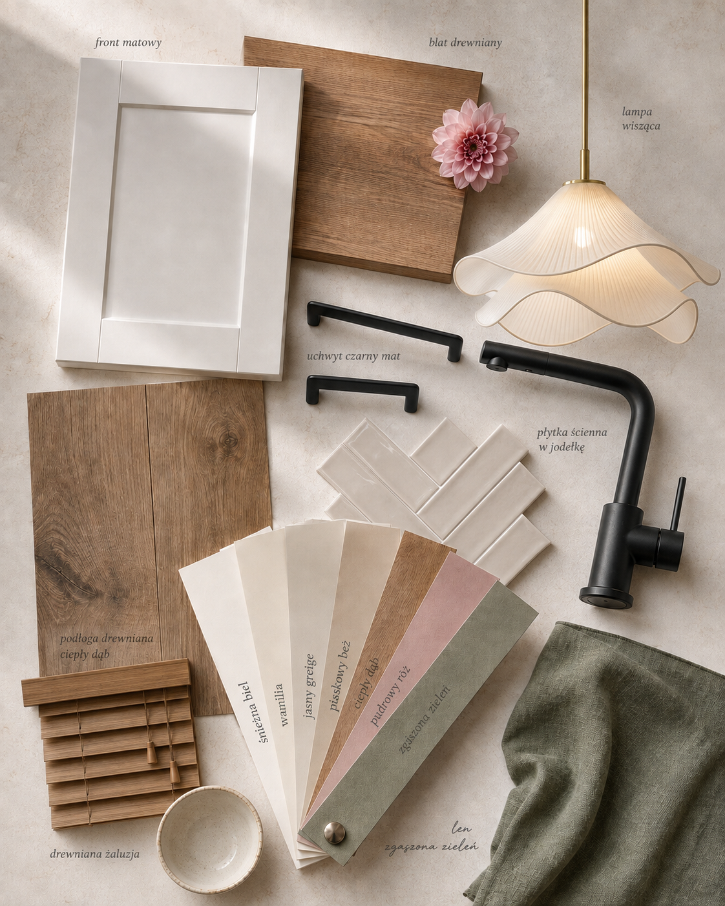

Zobacz swoją nową kuchnię, zanim wydasz pieniądze na remont.
Ta instrukcja prowadzi Cię krok po kroku do wizualizacji takiej jak na zdjęciu. Zajmie Ci to około 10 minut.


Przesuń suwak. Tę wizualizację zrobiłam w ChatGPT dokładnie tym sposobem.
Czego potrzebujesz
-
Zdjęcia swojej kuchniZrobisz je telefonem w kroku 1
-

MoodboarduPobierzesz go w kroku 2 - Darmowego konta ChatGPTZałożysz je w minutę w kroku 3
Krok po kroku
-
Zrób zdjęcie swojej kuchni
Stań w miejscu, z którego dobrze widać całe pomieszczenie. Najlepiej przy naturalnym świetle, szerokim kadrem i bez trybu portretowego.
Im lepiej AI widzi układ pomieszczenia, tym łatwiej zachowa jego prawdziwe proporcje.
-
Pobierz moodboard
Moodboard pokazuje AI, jak ma wyglądać Twoja nowa kuchnia. To z niego ChatGPT odczyta kolor frontów, drewno, blat, płytki, uchwyty, armaturę i klimat wnętrza.
Plik zapisze się na Twoim urządzeniu.
-
Otwórz ChatGPT i dodaj oba zdjęcia
W nowej rozmowie dodaj do jednej wiadomości zdjęcie kuchni i moodboard. Nie wysyłaj jej jeszcze, najpierw skopiuj prompt z kolejnego kroku.
Otwórz ChatGPT
Zdjęcie Twojej kuchni Moodboard ChatGPT -
Skopiuj gotowy prompt
Nie musisz opisywać każdego materiału. Ten prompt mówi ChatGPT, co może zmienić, a czego nie powinien ruszać.
Image 1: zdjęcie bazowe kuchni — istniejące pomieszczenie, którego architekturę i perspektywę zachowujemy bez zmian. Image 2: moodboard stylistyczny — referencja palety kolorów, materiałów i nastroju do przeniesienia. Zadanie: Wygeneruj fotorealistyczną wizualizację tej kuchni w stylu z Image 2, zachowując dokładną architekturę i ujęcie z Image 1. Zachowaj bez zmian: - dokładny kąt kamery, kadr i perspektywę z Image 1 - pozycję okien, drzwi, ścian, sufitu i podłogi -
Wygeneruj swoją kuchnię
Wklej prompt pod załączonymi zdjęciami i wyślij wiadomość. Po chwili zobaczysz swoją kuchnię w nowym stylu.
Wróć do ChatGPTPierwsza wersja nie jest idealna? Nie zaczynaj od początku. Poproś o zmianę tylko jednego elementu, na przykład:
„Zmień tylko kolor frontów na biały. Poza tym nic nie zmieniaj.”
„Zmień tylko płytki między blatem a szafkami na płytki z załącznika.”
Najpierw zobacz. Potem zdecyduj.
AI nie musi projektować domu za Ciebie. Może pomóc Ci zobaczyć pomysł, zanim wydasz na niego pieniądze.